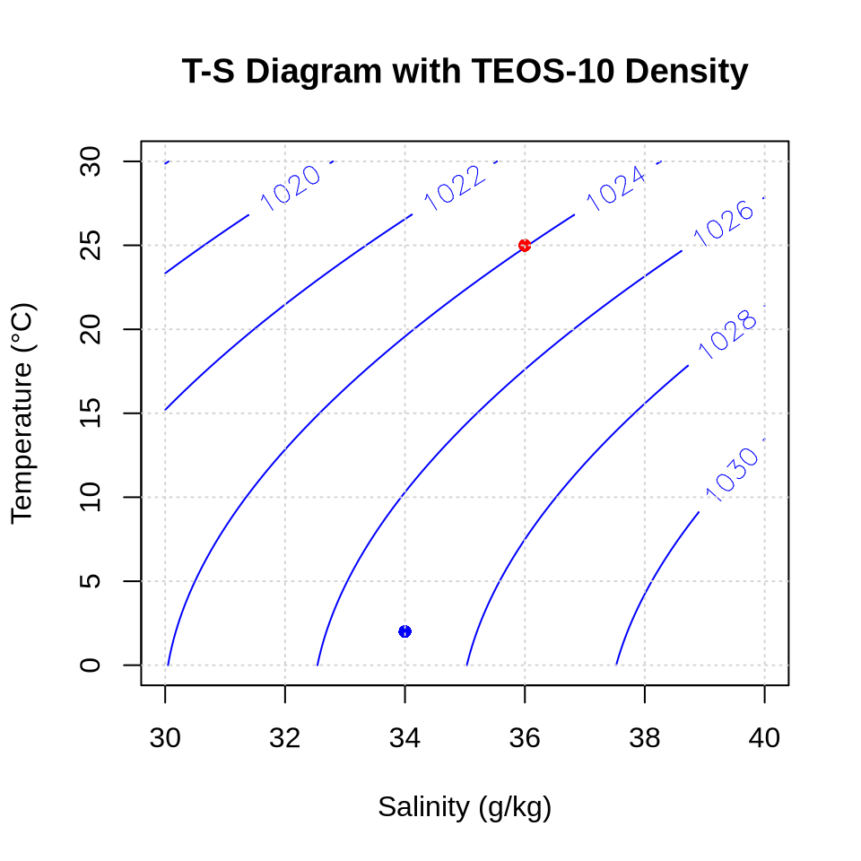
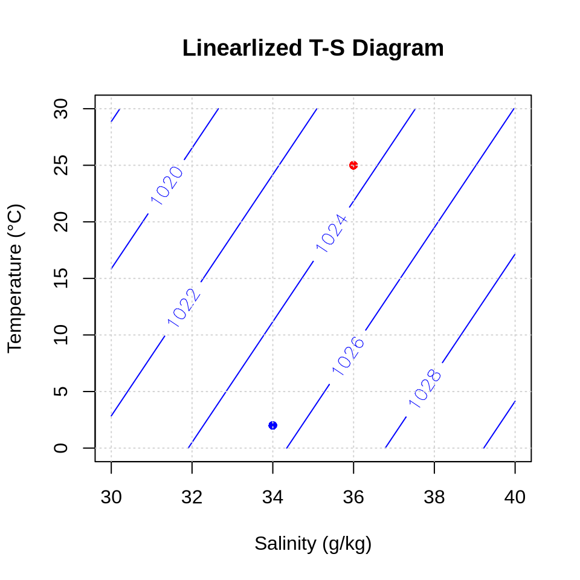
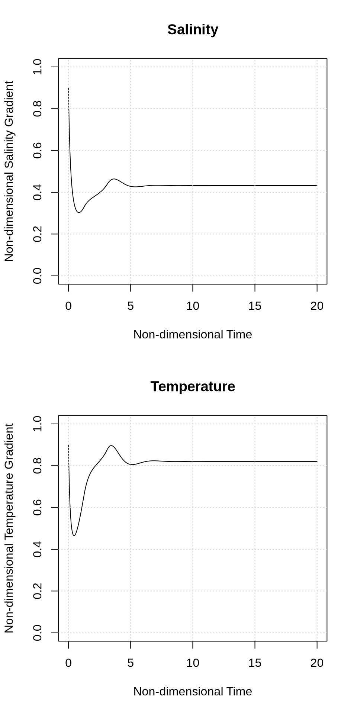
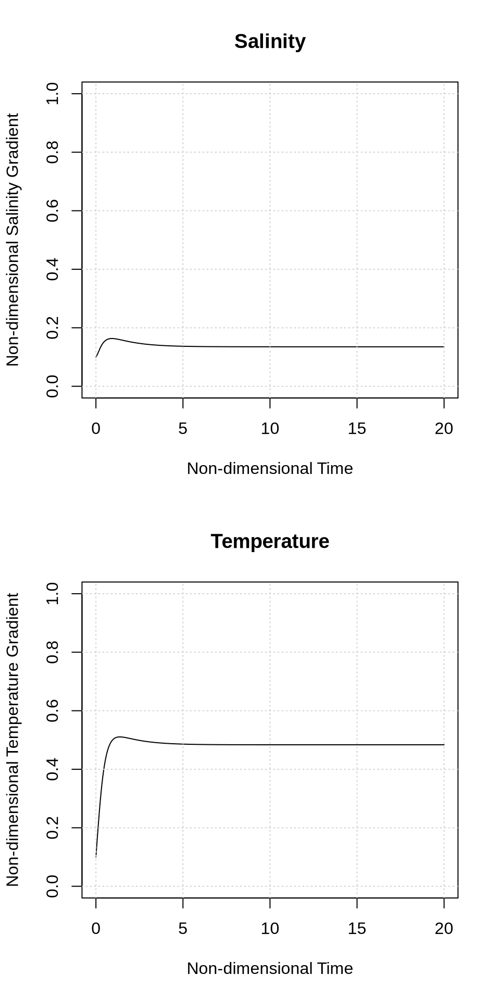
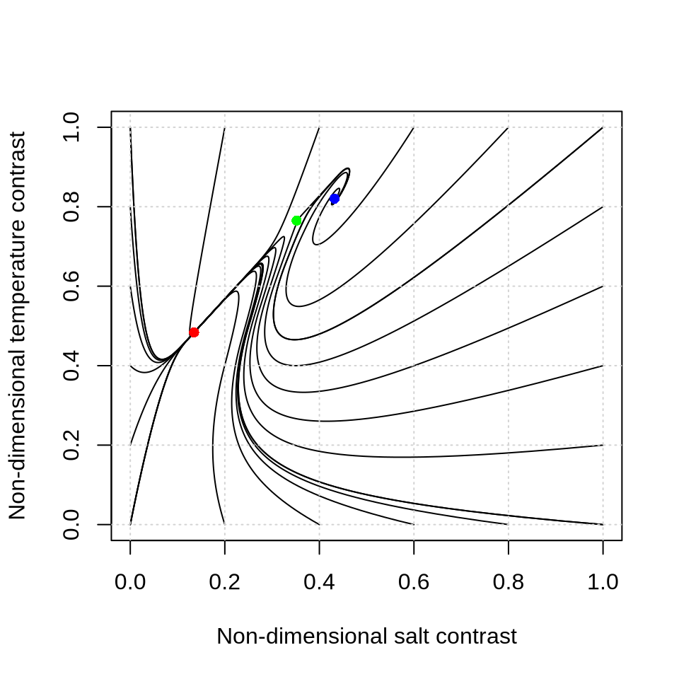
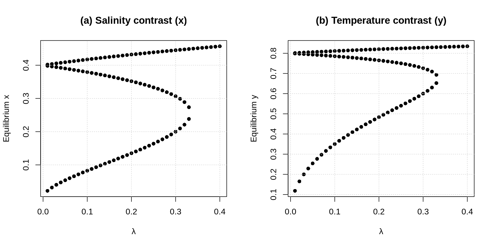

3 Week 3: Ocean Circulation Dynamics
3.1 The Stommel Model
Henry Stommel developed a conceptual model of the thermohaline circulation, which he published in a seminal paper in 1961. The model consists of two idealized ocean boxes representing low-latitude warm water and high-latitude cold water. The circulation between the boxes is driven by density differences: denser water sinks in the high-latitude box, flows equatorward at depth, and returns poleward near the surface, conserving mass. The strength of the circulation increases with the density contrast between the boxes. Water density depends on both temperature and salinity: higher salinity increases density, whereas higher temperature decreases it.
In the low-latitude box, the temperature is warmer because the overlying atmosphere is warmer, and the salinity is higher because prescribed evaporation exceeds precipitation. In the high-latitude box, the temperature is colder because the overlying atmosphere is colder, and the salinity is lower because prescribed precipitation exceeds evaporation. The temperature in both boxes is strongly constrained by the atmosphere through restoring toward atmospheric temperatures, although exchange of water between the boxes can transport heat. The salinity, however, is directly affected by the circulation: stronger circulation transports salt between the boxes and tends to reduce the salinity contrast.
The flow is driven by density differences, which depend on both temperature and salinity with opposing effects: higher temperature decreases density, whereas higher salinity increases it. Thus, the low-latitude box is warm and salty, while the high-latitude box is cold and fresher.
Two types of circulation are possible. If density differences are dominated by temperature, the high-latitude box is denser than the low-latitude box, and water flows from high to low latitudes in the deep branch with a compensating surface return flow. This is the thermally dominated circulation. If density differences are dominated by salinity, the low-latitude box becomes denser, and the overturning circulation reverses, with deep flow toward high latitudes. This is the salinity-dominated circulation.
Because circulation transports salt between the boxes, stronger flow reduces the salinity contrast. This tends to stabilize thermally dominated circulation but weaken salinity-dominated circulation.
3.1.1 Temperature - Salinity Diagram
To better understand this, let’s assess how density is affected by temperature and salinity. The relationship is non-linear, and determined by the Thermodynamic Equation of Sea Water 2010 (TEOS-10). The Figure below gives the sea water density (blue contours in kg m-3) as a function of salinity and temperature.
library(gsw)
# Define ranges
T <- seq(0, 30, by = 0.1) # y-axis (temperature)
S <- seq(30, 40, by = 0.1) # x-axis (salinity)
# Compute density using outer
# outer(T, S) -> rows = T, cols = S
rho_matrix <- outer(T, S, function(T, S) gsw_rho(SA = S, CT = T, p = 0))
# Transpose so contour interprets correctly
rho_matrix <- t(rho_matrix)
# Plot
contour(
x = S, y = T, z = rho_matrix,
xlab = "Salinity (g/kg)",
ylab = "Temperature (°C)",
main = "T-S Diagram with TEOS-10 Density",
levels = seq(500, 2000, by = 2),
col = "blue", lwd = 1, labcex = 1.0
)
box.HL <- c(34, 2) # salinity and temperature of high-latitude box
box.LL <- c(36, 25) # salinity and temperature of high-latitude box
points(x = box.HL[1], y = box.HL[2], col = "blue", pch = 16) # high-latitude
points(x = box.LL[1], y = box.LL[2], col = "red", pch = 16) # low-latitude
grid()
Quiz Question: The two dots denote conditions representative for the low-latitude and high-latitude boxes. Which one is which?
- (A): low-latitude = red, high-latitude = blue
- (B): low-latitude = blue, high-latitude = red
Quiz Question: The blue dot has a higher density compared to the red dot. Is this due to the:**
- (A): salinity contrast
- (B): temperature contrast
Quiz Question: Let’s reduce salinity of the blue dot by 6 g/kg. Which dot would show the higher density?
- (A): red
- (B): blue
Quiz Question: How would this affect the direction of flow in the lower branch?
- (A): The flow would be directed from low to high latitudes
- (B): The flow would be directed from high to low latitudes
Quiz Question: What is the relevance of this finding for the context of climate change?
- (A): Climate change causes ice sheets to melt, reducing the salinity of North Atlantic seawater, decreasing water density, and strengthening the Atlantic Meridional Overturning Circulation.
- (B): Climate change causes ice sheets to melt, reducing the salinity of North Atlantic seawater, decreasing water density, and weakening the Atlantic Meridional Overturning Circulation.
- (C): Climate change causes ice sheets to melt, increasing freshwater input to the North Atlantic, increasing water density, and weakening the Atlantic Meridional Overturning Circulation.
- (D): Climate change causes ice sheets to melt, freshening the North Atlantic, but the resulting salinity change has no significant influence on the Atlantic Meridional Overturning Circulation because temperature is the dominant control on density.
In the Stommel model, we use a linearlized version of the equation of state:
\[ \rho = \rho_0 (1 - \alpha (T- T_0) + \beta (S-S_0) \]
where \(\rho\) is the sea water density (kg m\(^{-3}\)), \(T\) and \(S\) are temperature and salinity anomalies, respectively and \(\alpha\) is the thermal contraction (\(\alpha = 1.5 \times 10^{-4}\) K) and \(\beta\) is the saline expansion (\(\beta = 8 \times10^{-4}\) psu-1). The unit psu stands for practical salinity unit, which is a dimensionless unit that expresses the ratio of conductivities. A value of 1 psu roughly correspond 1 g salt per 1 kg sea water. \(T_0\) and \(S_0\) are reference temperature and salinity (\(T_0\) = 10\(^{\circ}\)C, \(S_0\) = 35 g kg-1). Let’s create a T-S diagram with this linearlized version of the equation of state.

You can see that the density values are similar, but not identical. However, using a linearlized equation of state keeps the math below more simple. Let’s now finally get to the Stommel model.
3.2 Phase Diagram
The Stommel model consists of two ODEs, which represent the non-dimensional salinity contrast (\(x\)), non-dimensional temperature contrast (\(y\)) (page 227 in respective paper):
\[ \frac{dx}{d\tau} = \delta(1-x) - \frac{x}{\lambda} |-y +Rx| \] \[ \frac{dy}{d\tau} = 1 - y - \frac{y}{\lambda}|-y + Rx|\]
To summarize, the Stommel model has two variables (\(x\) and \(y\)) and three main parameters (\(R\), \(\delta\), and \(\lambda\)). Let’s define each variable and parameter:
\(x\) (-) is the non-dimensional salinity contrast between box 1 (polar) and box 2 (tropical): \(x = \frac{\Delta S}{\Delta S^*}\), where \(\Delta S^*\) is the typical salinity contrast between both boxes. In the model, \(S^*\) denotes the salinity of the imposed boundary conditions. If \(x<1\) then that means that the contrast is smaller than the imposed contrast.
\(y\) (-) is the non-dimensional temperature contrast between box 1 (polar) and box 2 (tropical): \(y = \frac{\Delta T}{\Delta T^*}\), where \(\Delta T^*\) is the typical temperature contrast between both boxes. In the model, \(T^*\) denotes the salinity in the adjacent ocean basin. If \(y<1\) then that means that the contrast is smaller than the imposed contrast.
\(\delta\) (-) is the ratio of the salinity transfer coefficient (\(d\), in s-1) and temperature transfer coefficient (\(c\), in s-1): \(\delta = \frac{d}{c}\). If \(\delta<1\) then the temperature transfer rate exceeds the salinity transfer rate.
\(\tau\) (-) is the non-dimensional time variable: \(\tau = ct\)
\(R\) (-) is a ratio that expresses the relative effect of salinity and temperature on seawater density: \(R = \frac{\beta \Delta S^*}{\alpha \Delta T^*}\)
\(\alpha\) (K-1) is the thermal contraction (\(\alpha = 1.5 \times 10^{-4}\) K-1)
\(\beta\) (psu-1) is the saline expansion (\(\beta = 8 \times10^{-4}\) psu-1)
\(\lambda\) (-) measures the relative strength of flow resistance to thermal forcing: \(\lambda = \left( \frac{c}{4 \rho_0 \alpha \Delta T^*} \right) k\). The larger \(\lambda\), the weaker the circulation response to temperature contrast.
\(k\) (kg m\(^{-3}\) s) is the resistance of the capillary tube: \(q=\frac{1}{k}(\rho_1-\rho_2)\)
\(q\) (s\(^{-1}\)) is the flow rate: \(q=\frac{1}{k}(\rho_1-\rho_2)\)
Let us begin by plotting the free solution of the dynamical system for \(R\) = 2, \(\delta\) = 1/6, and \(\lambda\) = 1/5, as well as initial conditions of \(x = 0.1\) and \(y = 0.1\):
# Load required package
library(deSolve)
# Define parameters (change these to explore different behavior)
R <- 2
delta <- 1 / 6
lambda <- 1 / 5
# Define the system of ODEs
system <- function(t, state, parameters) {
x <- state[1]
y <- state[2]
dx <- delta * (1 - x) - x / lambda * abs(-y + R * x)
dy <- 1 - y - y / lambda * abs(-y + R * x)
list(c(dx, dy))
}
# Initial conditions
initial_conditions <- c(0.9, 0.9)
# Time span
dt <- 0.01
times <- seq(0, 20, by = dt)
# Solve ODEs for each initial condition
solutions <- ode(
y = initial_conditions,
times = times,
func = system,
parms = NULL,
method = "lsoda"
)
# Plot
df <- data.frame(solutions)
colnames(df) <- c("time", "x", "y")
par(mfrow = c(2, 1))
plot(
x = df$time,
y = df$x,
type = "l",
ylim = c(0, 1),
ylab = "Non-dimensional Salinity Gradient",
xlab = "Non-dimensional Time",
main = "Salinity"
)
grid()
plot(
x = df$time,
y = df$y,
type = "l",
ylim = c(0, 1),
ylab = "Non-dimensional Temperature Gradient",
xlab = "Non-dimensional Time",
main = "Temperature"
)
grid()
Change the initial conditions to \(x = 0.1\) and \(y = 0.1\) to reproduce the figure below.

Quiz Question: What do you conclude from these figures?
Quiz Question: Compare the four figures above with Figure 7 in Stommel’s 1961 paper. Explain why your figures above are consistent with what you see in Stommel’s Figure 7.
3.3 Phase portrait
We can use the same function to plot non-dimensional salinity contrast (\(x\)) against non-dimensional temperature contrast (\(y\)) for different initial conditions. This leads to a so-called phase portrait.
rm(list = ls())
# Define parameters (change these to explore different behavior)
R <- 2
delta <- 1 / 6
lambda <- 1 / 5
# Define the system of ODEs
system <- function(t, state, parameters) {
x <- state[1]
y <- state[2]
dx <- delta * (1 - x) - x / lambda * abs(-y + R * x)
dy <- 1 - y - y / lambda * abs(-y + R * x)
list(c(dx, dy))
}
# Initial conditions
num <- seq(0, 1, 0.2)
zer <- rep(0, length(num))
one <- rep(1, length(num))
x <- c(zer, num, one, num)
y <- c(num, one, num, zer)
# Time span
dt <- 0.01
times <- seq(0, 20, by = dt)
n <- length(x)
result <- vector("list", n) # preallocate
for (i in 1:n)
{
x.i <- x[i]
y.i <- y[i]
initial_conditions <- c(x.i, y.i)
# Solve ODEs for each initial condition
solutions <- ode(
y = initial_conditions,
times = times,
func = system,
parms = NULL,
method = "lsoda"
)
df <- data.frame(solutions[, 2], solutions[, 3])
colnames(df) <- c("x", "y")
result[[i]] <- df
}
x <- result[[1]]$x
y <- result[[1]]$y
plot(x, y,
type = "l", xlim = c(0, 1), ylim = c(0, 1),
xlab = "Non-dimensional salt contrast",
ylab = "Non-dimensional temperature contrast"
)
for (i in 1:n) {
x <- result[[i]]$x
y <- result[[i]]$y
lines(x, y, type = "l")
}
grid()
Quiz Question: Identify at least one equilibrium point
3.4 Equillibrium points
The phase portrait above identified three equilibrium points. Let us know calculate those equilibrium points from the equations. In the section on linear algebra, we did this by setting the ODEs to zero and solving for each variable. For more complicated ODEs, we can also approximate the equilibrium points numerically, which is what we will do here.
rm(list = ls())
library(rootSolve)
R <- 2
delta <- 1 / 6
lambda <- 1 / 5
# system of equations
f <- function(z) {
x <- z[1]
y <- z[2]
dx <- delta * (1 - x) - x / lambda * abs(-y + R * x)
dy <- 1 - y - y / lambda * abs(-y + R * x)
c(dx, dy)
}
# grid of starting guesses
xstart <- seq(-1, 2, length = 8)
ystart <- seq(-1, 2, length = 8)
solutions <- list()
for (xs in xstart) {
for (ys in ystart) {
out <- try(multiroot(f, start = c(xs, ys)), silent = TRUE)
if (!inherits(out, "try-error")) {
solutions[[length(solutions) + 1]] <- out$root
}
}
}
# combine and remove duplicates
solmat <- do.call(rbind, solutions)
unique_solutions <- unique(round(solmat, 4))
print(unique_solutions)## [,1] [,2]
## [1,] 0.1350 0.4836
## [2,] 0.4321 0.8203
## [3,] 0.3518 0.7651Let’s plot these three equilibrium points into our phase portrait. Do this by copying the code from above and then add points(x = 0.1350, y = 0.4836), pch = 16, col = "red" below. Do this for all three points.

Quiz Question: Are our calculated equilibrium points consistent with Stommel’s Figure 7?
3.5 Jacobian matrix and equilibrium eigenvalues
Let’s recall our set of ODEs:
\[ \frac{dx}{d\tau} = \delta(1-x) - \frac{x}{\lambda} |-y +Rx| \] \[ \frac{dy}{d\tau} = 1 - y - \frac{y}{\lambda}|-y + Rx|\]
Recall the Jacobian matrix:
\[ \mathbf{J} = \begin{bmatrix} \frac{\partial f_1}{\partial x} & \frac{\partial f_1}{\partial y} \\ \frac{\partial f_2}{\partial x} & \frac{\partial f_2}{\partial y} \\ \end{bmatrix} \]
The elements of this matrix are:
Rather than calculating the derivatives analytically, we will approach them numerically:
library(numDeriv)
# constants
R <- 2
delta <- 1 / 6
lambda <- 1 / 5
my.ODEs <- function(z) {
x <- z[1]
y <- z[2]
dx <- delta * (1 - x) - x / lambda * abs(-y + R * x)
dy <- 1 - y - y / lambda * abs(-y + R * x)
c(dx, dy)
}
# Equilibrium solutions
zstar <- unique_solutions[1, ]
J <- jacobian(func = my.ODEs, x = zstar)
eigenvalues <- eigen(J)$values
eigen.01 <- eigenvalues
zstar <- unique_solutions[2, ]
J <- jacobian(func = my.ODEs, x = zstar)
eigenvalues <- eigen(J)$values
eigen.02 <- eigenvalues
zstar <- unique_solutions[3, ]
J <- jacobian(func = my.ODEs, x = zstar)
eigenvalues <- eigen(J)$values
eigen.03 <- eigenvalues
df <- data.frame(eigen.01, eigen.02, eigen.03)
print(df)## eigen.01 eigen.02 eigen.03
## 1 -3.6096813 -0.9125833+1.823107i -2.8493110
## 2 -0.7609854 -0.9125833-1.823107i 0.7601443Recall that the equilibrium eigenvalues characterize the equilibrium point, e.g.:
- If all eigenvalues \(>0\): unstable node
- If all eigenvalues \(<0\): stable node
- If the sign varies among eigenvalues: saddle (unstable)
- If any \(\lambda = 0\): tipping point
The second equilibrium point is described by a complex number with a real and an imaginary component. Here we are only concerend with the real component of the number.
Quiz Question: Classify each of the three equilibrium points
3.6 Bifurcation diagram
Recall that \(\lambda\) (-) measures the relative strength of flow resistance to thermal forcing:
\[\lambda = \left( \frac{c}{4 \rho_0 \alpha \Delta T^*} \right) k\]. The larger \(\lambda\), the weaker the circulation response to temperature contrast. Let us now vary the parameter \(\lambda\) and calculate the equilibrium points for different values of \(\lambda\). This will result in the bifurcation diagram below.
library(rootSolve)
R <- 2
delta <- 1 / 6
f <- function(z, lambda) {
x <- z[1]
y <- z[2]
dx <- delta * (1 - x) - x / lambda * abs(-y + R * x)
dy <- 1 - y - y / lambda * abs(-y + R * x)
c(dx, dy)
}
find_eq <- function(lambda) {
xstart <- seq(-0.5, 1.5, length = 6)
ystart <- seq(-0.5, 1.5, length = 6)
sols <- list()
for (xs in xstart) {
for (ys in ystart) {
out <- try(
multiroot(f,
start = c(xs, ys),
lambda = lambda
),
silent = TRUE
)
if (!inherits(out, "try-error")) {
root <- out$root
# --- convergence check ---
res <- f(root, lambda)
if (max(abs(res)) < 1e-6) { # tolerance
sols[[length(sols) + 1]] <- root
}
}
}
}
if (length(sols) == 0) {
return(NULL)
}
unique(round(do.call(rbind, sols), 4))
}
# sweep lambda
lambdas <- seq(0.01, 0.4, by = 0.01)
results <- data.frame()
for (lam in lambdas) {
eq <- find_eq(lam)
if (is.null(eq)) next
results <- rbind(
results,
data.frame(
lambda = lam,
x = eq[, 1],
y = eq[, 2]
)
)
}
par(mfrow = c(1, 2))
# plot bifurcation diagram (x equilibrium)
plot(results$lambda, results$x,
pch = 16,
xlab = expression(lambda),
ylab = "Equilibrium x",
main = "(a) Salinity contrast (x)"
)
grid()
plot(results$lambda, results$y,
pch = 16,
xlab = expression(lambda),
ylab = "Equilibrium y",
main = "(b) Temperature contrast (y)"
)
grid()
Quiz Question: Which are the stable and which are the unstable branches for the bifurcation diagram?
From the equilibrium \(x\) (non-dimensional salinity contrast) and \(y\) (non-dimensional temperature contrast) values, we can calculated the corresponding dimensionless flow rate \(f\):
\[f = (-y + Rx) /\lambda \]
If \(f<0\) then the circulation is in a temperature-mode (T-mode): the deep branch flow is in the direction set by temperature contrast (from cold to warm = from high to low latitudes)
If \(f>0\) then the circulation is in a salinity mode (S-mode): the deep branch flow is in the direction set by salinity contrast (from salty to fresh = from low to high latitudes)
library(rootSolve)
R <- 2
delta <- 1 / 6
f <- function(z, lambda) {
x <- z[1]
y <- z[2]
dx <- delta * (1 - x) - x / lambda * abs(-y + R * x)
dy <- 1 - y - y / lambda * abs(-y + R * x)
c(dx, dy)
}
find_eq <- function(lambda) {
xstart <- seq(-0.5, 1.5, length = 6)
ystart <- seq(-0.5, 1.5, length = 6)
sols <- list()
for (xs in xstart) {
for (ys in ystart) {
out <- try(
multiroot(f,
start = c(xs, ys),
lambda = lambda
),
silent = TRUE
)
if (!inherits(out, "try-error")) {
root <- out$root
# --- convergence check ---
res <- f(root, lambda)
if (max(abs(res)) < 1e-6) { # tolerance
sols[[length(sols) + 1]] <- root
}
}
}
}
if (length(sols) == 0) {
return(NULL)
}
unique(round(do.call(rbind, sols), 4))
}
# sweep lambda
lambdas <- seq(0.01, 0.4, by = 0.01)
results <- data.frame()
for (lam in lambdas) {
eq <- find_eq(lam)
if (is.null(eq)) next
results <- rbind(
results,
data.frame(
lambda = lam,
x = eq[, 1],
y = eq[, 2]
)
)
}
lambda <- results$lambda
x <- results$x
y <- results$y
f <- (-y + R * x) / lambda
par(mfrow = c(1, 1))
# plot bifurcation diagram (x equilibrium)
plot(results$lambda, f,
pch = 16,
xlab = expression(lambda),
ylab = "Equilibrium f",
main = "Dimensionless flow rate f"
)
grid()
abline(h = 0, col = "red")
Quiz Question: Consider you are in the T-mode and \(\lambda\) = 0.3. Let’s say that \(\lambda\) increases to 0.35. What will happen with the direction of the flow?
Quiz Question: Next, imagine \(\lambda\) then returns from 0.35 back to 0.3. How will this affect the flow.
Quiz Question: Have another look at your phase diagram. Calculate \(f\) for each point and evaluate Which of the equilibrium points corresponds to the T-mode, and which to the S-mode?